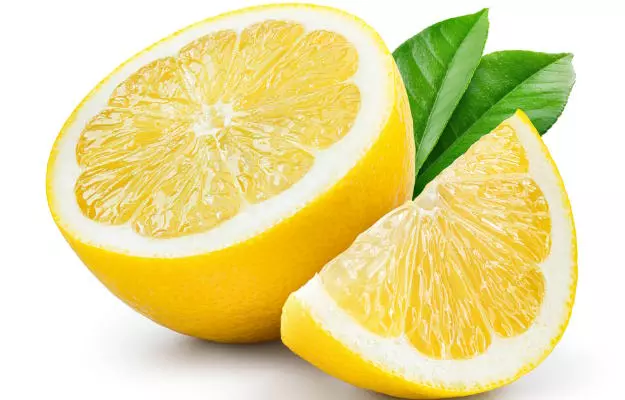
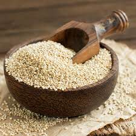

Lemon Garlic Shrimp and Quinoa Bowl

 shrimps 150-200g
shrimps 150-200g
 garlic 1clove
garlic 1clove
 olive oil 1 tablespoon
olive oil 1 tablespoon

Lemon 1/2 for both slice and juice
quinoa 1/2 cup uncookedServing Size: 1
Servings Per Recipe: 1
Serving Size: 1/2 cup
Calories: 390 cal
| Nutrient | Amount | % Daily Value * | Total Carbohydrate | 48g | 17% |
|---|---|---|
| Dietary Fiber | 6g | 21% |
| Total Sugars | 11g | |
| Protein | 13g | 26% |
| Total Fat | 17g | 22% |
| Saturated Fat | 2.5g | 13% |
| Vitamin A | 28mcg | 3% |
| Vitamin C | 30.72mcg | 4% |
| calcium | 78mg | 6% |
| iron | 3mg | 17% |
| pottasium | 465mg | 10% |